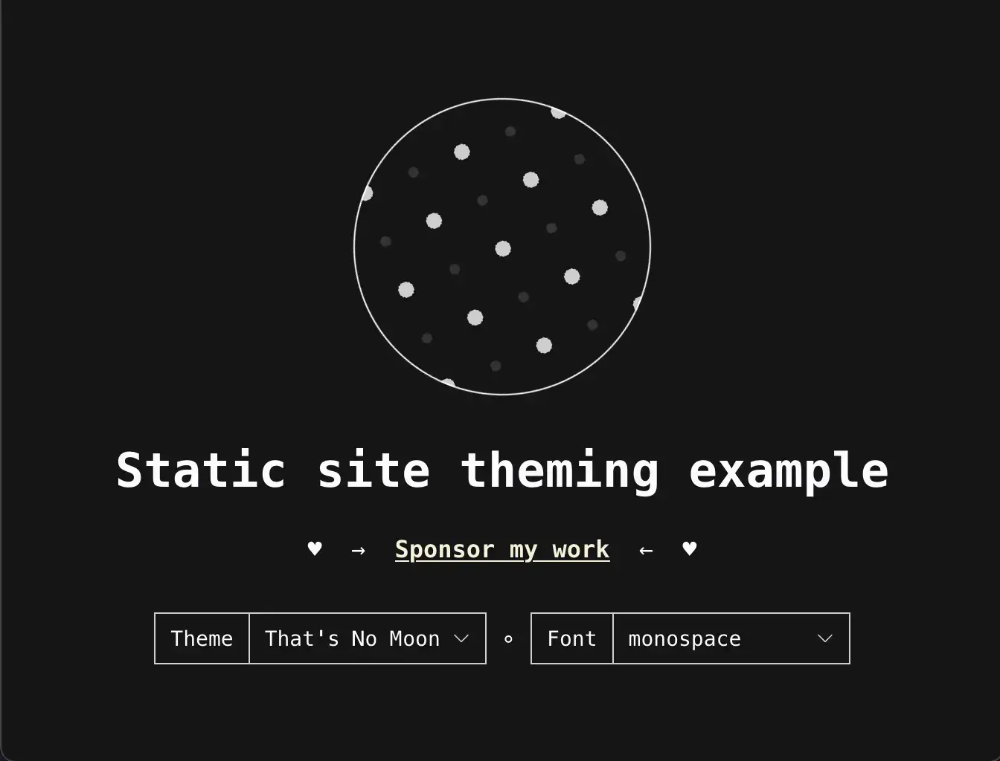
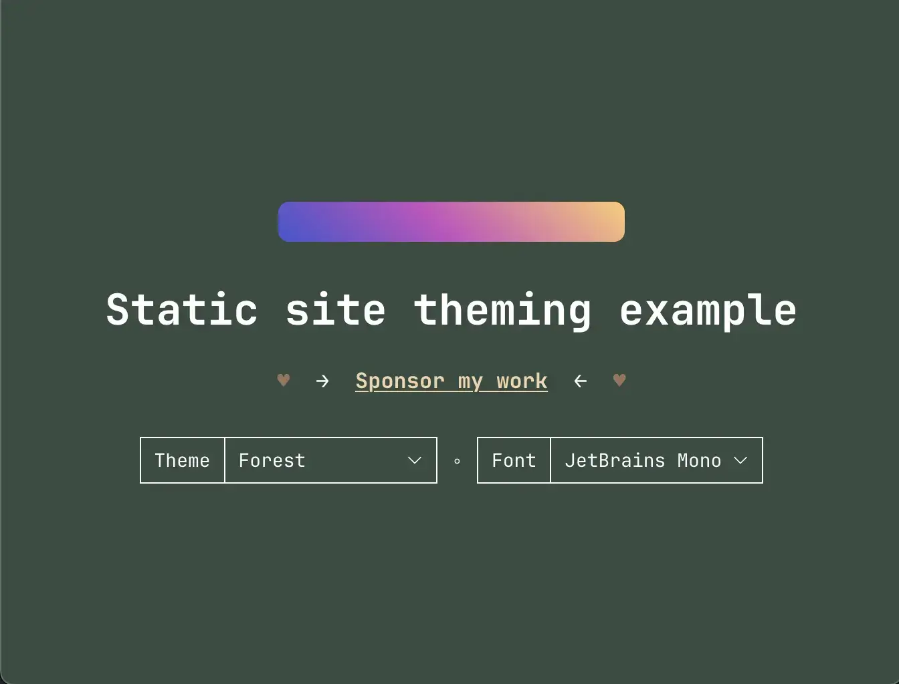
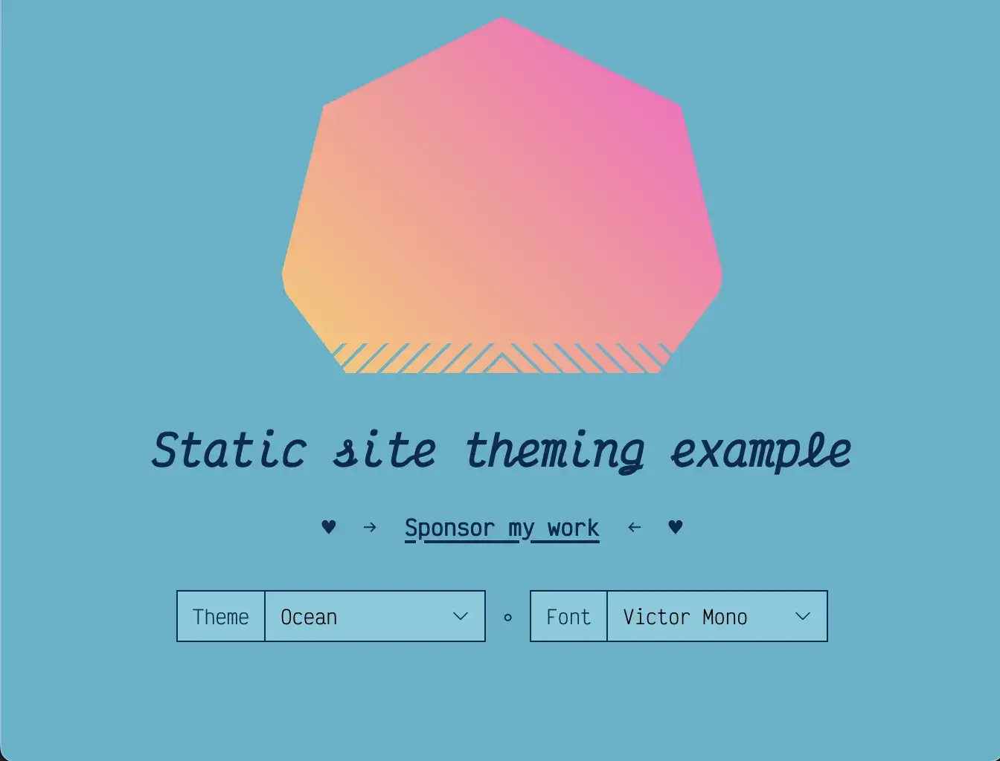

Theming static sites
Info
| Summary | Allowing readers to choose themes on your static site is a way to respect their system preferences and give them viewing choices without requiring an account nor cookies. |
|---|---|
| Shared | 2024-01-02 |
| Revised | 2024-01-10 @ 12:00 UTC |
In this post, we’re going to dive into some useful patterns for theming static websites that we can start using today to respect users’ system preferences and provide them with custom ways of viewing our content.
This post is sponsored by Flavio Corpa (kutyel), and if you’re curious about Elm, Haskell, or functional JS, check out his work! If you’d like to sponsor me writing about a topic, check out my GitHub Sponsors page.
A little about static sites
Static websites are typically .html-suffixed files that use only HTML, CSS, and a little JS, and they have a number of advantages: they’re usually cheap to maintain, easy to deploy, easy to cache via CDNs, and have fewer security risks than dynamic web applications since they don’t have backend application servers. Static sites fit perfectly in the old web style of blogs, information sites, small business sites, personal photo galleries, etc. However, when it comes to setting and storing readers’ preferences—a common expectation these days—static sites are at a disadvantage, for they have no backend app server with which to communicate to figure this out and render the page just right for a viewer.
For me (and the purposes of this post), static sites do not refer to single-page apps (SPAs) nor server-side rendered web apps.
Our goals
- Provide readers with different theme options
- Support readers’ light/dark mode system preferences
- Use patterns that can be extended to providing preferences for font families, text styling, animations, and anything you can imagine someone might want to customize for your site. Note: always respect user system settings first, then utilize this sort of customization on top of that! Don’t make (or use) an accessibility overlay with this pattern.
The example
Apart from this website, which demonstrates most everything we’ll cover, I made a smaller example site here. Go ahead and open it up, make some selections, and refresh the page a few times, if you like. We will reference this example throughout the rest of this post, so keep the page open. The only bummer is that we’ll not be covering the font changing in this post, but its code is available in the example and follows the same patterns we’ll do here.
Here are some screenshots:



Sketching our HTML
Let’s sketch out some markup we’ll need to accomplish our goal:
<!DOCTYPE html>
<html lang="en">
<head>
<!-- The usual title, meta, and link elements go here. -->
</head>
<body>
<script>
/*
* This is where we'll put some blocking JS
* that does a couple of things before the
* page is painted. Trust me!
*/
</script>
<main>
<h1>Static site theming example</h1>
<!--
This is where our <select> element
for changing the theme will go.
-->
</main>
<script async>
/*
* This is where we'll add some event listeners
* to handle changes to our theming options. I
* did this part using the body of a script element,
* but it could reference a script file using the
* `src` attribute, instead.
*/
</script>
</body>
</html>Theme selector
After our <h1> element, let’s add a form select input that we’ll provide the reader for controlling their theme.
<form>
<label for="select-theme">Theme</label>
<select data-select-theme="" id="select-theme">
<option value="moon">That's No Moon</option>
<option value="forest">Forest</option>
<option value="ocean">Ocean</option>
</select>
</form>Let’s then add some JS to the <script async> element at the bottom to listen for changes to our <select>:
(() => {
const themeEl = document.querySelector('[data-select-theme]');
if (themeEl) {
themeEl.addEventListener('change', e => {
console.log(e.target.value)
// We need to do something here!
});
}
})();If we were using a backend server, we’d submit the readers’ selection to the backend to store in a database or cookie, but since we don’t have a backend, we need to use localStorage.
Where we have that console.log and code comment above, it would be nice if we could call a function or method that would set the theme for us and do all that work. Let’s do that!
themeEl.addEventListener('change', e => {
window.site.setTheme(e.target.value);
});That feels better, but we don’t have a site object and therefore no setTheme method on it. Since we’ll probably want site to be available when the page is loading, we’re going to put this initialization code in the first <script> element:
(() => {
window.site = {
setTheme: (name) => {
// Our theme-setting code will go here
},
};
});Before we add our theme-setting code, we need to talk about what we want it to do:
- We want it to set a value somewhere that our CSS can use to know what the theme is set to. How about a
data-attribute on thebody? Why not? - We want to store that theme value in
localStorage
window.site = {
setTheme: (name) => {
document.body.setAttribute('data-theme', name);
localStorage.setItem('prefTheme', name);
},
};This means that in our HTML file above, we should go back and add a default data-theme on <body> for when the page loads the first time:
<body data-theme="moon">Then, when a reader makes a change to the theme, it’ll update that value to whatever the value was set to in the <select>.
A note about the CSS
Feel free to poke around the example’s CSS to see this in full, but here’s the gist.
For our CSS, all we need to do is have our styles use CSS variables for the things that can change, and then those CSS variables are defined like this:
body, /* Because moon is the default here...this is just in case */
body[data-theme="moon"] {
--alpha-link-visited: 0.85;
--color-bg-body: 21, 21, 21;
--color-bg-select: 21, 21, 21;
--color-border-select: 206, 206, 206;
--color-link: 246, 241, 213;
--color-sponsor-hearts: 206, 206, 206,
--color-text: 206, 206, 206;
--icon-select: var(--icon-select-moon);
--link-underline-offset: 0.2rem;
--link-underline-thickness: max(0.1rem, 1px);
--link-weight: bold;
}
body[data-theme="forest"] {
--alpha-link-visited: 0.9;
--color-bg-body: 57, 76, 66;
--color-bg-select: 57, 76, 66;
--color-border-select: 255, 255, 255;
--color-link: 238, 213, 174;
--color-sponsor-hearts: 153, 117, 90;
--color-text: 255, 255, 255;
--icon-select: var(--icon-select-forest);
--link-underline-offset: 0.2rem;
--link-underline-thickness: max(0.1rem, 1px);
}
body[data-theme="ocean"] {
--alpha-link-visited: 0.85;
--color-bg-body: 82, 179, 201;
--color-bg-select: 123, 203, 222;
--color-border-select: 0, 43, 77;
--color-link: 0, 43, 77;
--color-sponsor-hearts: 0, 43, 77;
--color-text: 0, 43, 77;
--icon-select: var(--icon-select-ocean);
--link-underline-offset: 0.3rem;
--link-underline-thickness: 0.2rem;
}With this approach, every time the data-theme on body changes to a known value (moon, forest, or ocean), the CSS variables for that theme get used, and boom! You have theming! Great!
But what happens if they refresh the page…?
Back to the JS
Oh no! The <select> isn’t populated with what the reader selected, and their theme isn’t the one they chose, either!
No worries! Let’s get access to the prefTheme as the page is loading:
window.site = {
prefTheme: getPrefTheme(),
// ...
}
function getPrefTheme() {
const localPrefTheme = localStorage.getItem('prefTheme');
/*
* Make sure only our current themes are the ones that
* can be set.
*
* Note: I should source the theme names elsewhere for a single
* source of truth, but I'll figure that out another time. The
* `<select>` isn't available at this point in the rendering
* for us to look at the `<option>`s...
*/
if (['moon', 'forest', 'ocean'].includes(localPrefTheme)) {
return localPrefTheme;
} else {
return matchMedia('(prefers-color-scheme: dark)').matches
? 'moon'
: 'ocean';
}
}
window.site.setTheme(window.site.prefTheme);When the page is loading, we try to get the prefTheme from localStorage, and if the value doesn’t match any of our current themes, then we use matchMedia to figure out if we should serve up a dark or light theme to the user.
Once we have a theme value stored, we go ahead and call window.site.setTheme(window.site.prefTheme) just in case to make sure we have something stored for next time. We could do this in getPrefTheme() in the matchMedia logic branch, but doing so feels a little dirty to me.
Lastly for themes, we need to use window.site.prefTheme to select the correct dropdown option, and we can do that by sliding the work in where we have our <select>’s addEventListener:
if (themeEl) {
themeEl
.querySelector(`[value="${window.site.prefTheme}"]`)
.selected = 'selected';
themeEl.addEventListener('change', e => {
window.site.setTheme(e.target.value);
});
}Code recap
If you got lost along the way, no worries! Here’s a recap of all the code we did, and if you want to see it in action, be sure to check out the code used in the example.
<body data-theme="moon">
<script>
(() => {
window.site = {
prefTheme: getPrefTheme();
setTheme: (name) => {
document.body.setAttribute('data-theme', name);
localStorage.setItem('prefTheme', name);
},
};
function getPrefTheme() {
const localPrefTheme = localStorage.getItem('prefTheme');
if (['moon', 'forest', 'ocean'].includes(localPrefTheme)) {
return localPrefTheme;
} else {
return matchMedia('(prefers-color-scheme: dark)').matches
? 'moon'
: 'ocean';
}
}
window.site.setTheme(window.site.prefTheme);
})();
</script>
<main>
<h1>Static site theming example</h1>
<form>
<label for="select-theme">Theme</label>
<select data-select-theme="" id="select-theme">
<option value="moon">That's No Moon</option>
<option value="forest">Forest</option>
<option value="ocean">Ocean</option>
</select>
</form>
</main>
<script async>
(() => {
const themeEl = document.querySelector('[data-select-theme]');
if (themeEl) {
themeEl
.querySelector(`[value="${window.site.prefTheme}"]`)
.selected = 'selected';
themeEl.addEventListener('change', e => {
window.site.setTheme(e.target.value);
});
}
})();
</script>
</body>Thanks for reading!
— Robert